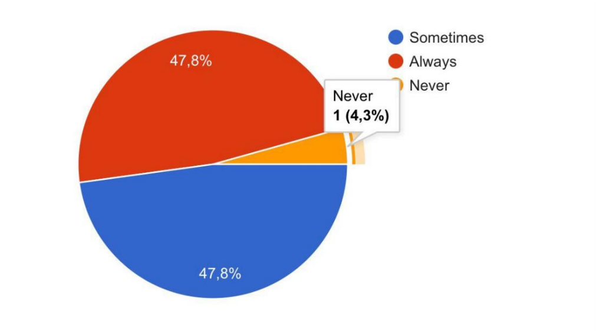
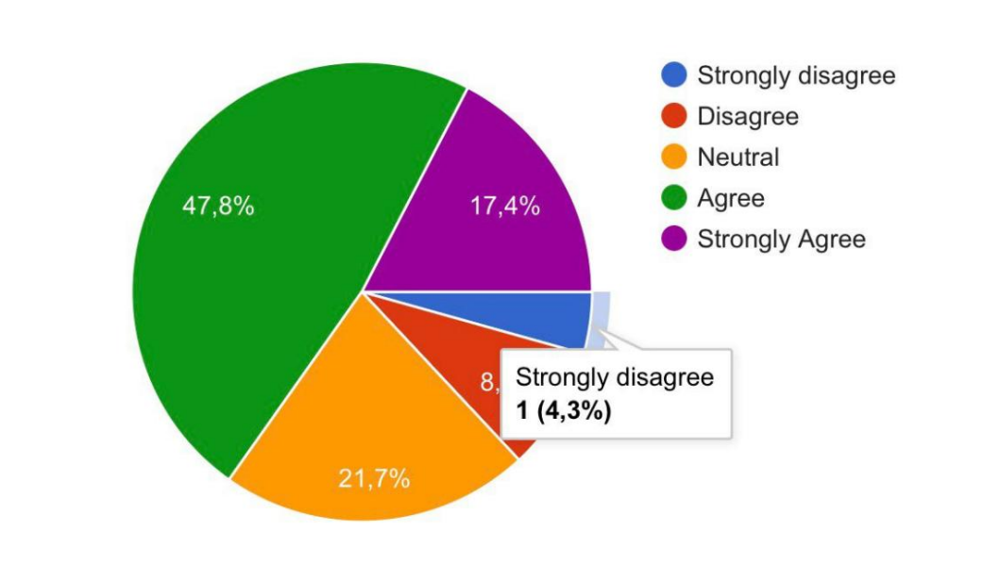
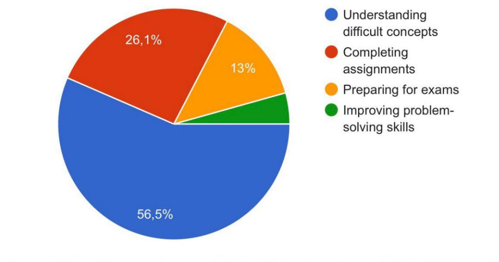

The Role of AI in Enhancing Problem-Solving Skills
Abstract
This research explores the artificial intelligence (AI) in enhancing problem-solving skills among engineering (STEM )students at Nazarbayev University.Data were collected through a short survey to investigate the usage of AI tools , perceived benefits, the frequency and downsides such as over reliance .
Research
IT and technology
13.09.2026
English
The Role of AI in Enhancing Problem-Solving Skills among STEM students
Artificial intelligence (AI) refers to computer systems capable of performing tasks that typically require human intelligence, such as learning and problem-solving (Copeland, 2026). According to Karen MacGregor (2025), AI use by students surges to 92%. This indicates that AI has become increasingly integrated into educational environments, transforming how students learn and interact with information. Additionally, AI technologies can enhance students’ problem-solving abilities by providing personalized feedback,and real-time assistance (The Editors of ProCon, 2026).
More specifically, STEM field and curriculum centred on education in the disciplines of science, technology, engineering, and mathematics - students are encouraged to develop strong analytical and problemsolving skills. These fields require individuals to think critically, analyze data, and create effective solutions to complex, real-world challenges. As a result, Education in STEM fields emphasizes critical thinking and problem-solving skills, which are essential for success in scientific and technical disciplines (Hallinen, 2026).
Despite this benefits , there is a contrast whether AI is a supporter or an obstacle. As reported by (Du et al., 2025), excessive reliance on Al tools may reduce students' ability to think critically and solve problems independently. However , using Al effectively into engineering ( STEM) curricula requires careful design and consideration of student needs (Hao et al., 2025). Overall, these different perspectives require for further research to determine the impact of AI among STEM students.
Therefore, this study aims to examine the role of AI among engineering (STEM ) students at Nazarbayev University. In addition, it intends to answer these research questions:
- How do students perceive AI tools in learning?
- Does AI improve problem-solving ability?
- How frequently do STEM students use AI tools for uderstanding the concepts ?
- What are the potential challenges of relying on AI tools in STEM education?
Literature Review
Artificial intelligence (AI) has become an essential component of modern education, particularly in STEM fields
Integration of AI in STEM Curricula:
A considerable body of research has focused on placing artificial intelligence in STEM education . In the study by Xhako et al. (2025) conducted a comprehensive review of STEM programs in Albania and found that approximately 60% of programs included Al-related content. Their results indicate that Al integration is more advanced in computer science and engineering compared to other STEM fields. Similarly, Hao et al. (2025) explored Al integration in engineering education in the United Kingdom, with 97% of participants reporting improved understanding of Al concepts. Both studies , focus on growing presence of AI in STEM programs
AI as a Tool For Deep Learning:
Another study has shown Triplett (2023) that AI-based tools can support both short-term academic success and long-term skill development. On the other hand ,Du et al. (2025) suggest that while AI can facilitate learning, it may also hinder critical thinking if overused or improperly unified.
Psychological Factors:
Although some studies confirms that AI plays a vital role in learning. Alkabaa and Alamri (2025) investigated the use of Generative Al (GenAI) among engineering students at King Saud University and found that student attitudes are strongly influenced by Al-related anxiety. Their study revealed significant gender differences, with female students reporting higher anxiety levels.
Despite these findings, little attention has been paid to students direct experiences and limited regions . To fulfill these gaps , the present study focuses on the role of Al among STEM students at Nazarbayev University. Using a survey, this research aims to examine students' perceptions of Al, and how Al influences their learning outcomes.
Methodology
Research Design:
This study employed a quantitative research design using a survey to examine the role of AI in enhancing problem-solving skills among engineering(STEM) students.
Participants:
Participants were engineering students from Nazarbayev University, with a total of 23 respondents.
Instrument:
Using Google Forms ,online survey was conducted including multiple choice questions . The survey can be viewed: https://forms.gle/Fy8iJvhd7KH4KWsD6
Procedure:
The survey was online and completed within 3 days . Participation was voluntary and anonymous
Results
This section presents the results of the survey conducted among engineering (STEM )students at Nazarbayev University regarding the use of artificial intelligence (AI) and its impact on problem-solving skills. The majority of 95.7% of students indicated that they have used AI tools for learning or problem-solving, while only 4.3% reported no prior use.
In terms of frequency, the results show that AI tools are widely used among students. Figure 1 illustrates that approximately 47.8% of respondents reported that they use AI tools always, while another 47.8% revealed that they use them sometimes. Only 4.3% of students reported that they never use AI tools
Figure1: Frequency of AI usage

Notwithstanding the impact of AI on independent thinking, responses were diverse d. As shown in Figure 2 , total of 47.8% of students agreed and 17.4% strongly agreed that AI makes them rely too much on technology rather than thinking independently. But 8.7% disagreed and 4.3% strongly disagreed, while 21.7% remained neutral
Figure 2: Over-reliance

Moreover, the analysis demonstrates the usage of Generative AI platforms among students . Highlighting of 82,6% of participants using ChatGPT and Gemini. Other tools were used less frequently, including Canva or NotebookLM 8.7%, Microsoft Copilot or Perplexity AI 4.3%, and other tools 4.3%
A significant increase was observed in understanding difficult concepts, as reported by 56.5% of students . Additionally, 26.1% use AI for completing assignments, 13% for exam preparation, and 4.3% specifically for improving problem-solving skills (figure 3).
Figure 3: Purpose of AI use

Generally , the results show that engineering (STEM)students use AI tools a lot and find them helpful for learning, but some are also worried about depending on them too much.
Discussion
The present study demonstrates the influence of AI among engineering students at Nazarbayev University. With highest percentage of of AI tools, particularly generative AI platforms like ChatGPT, shows that students perceive AI as a valuable learning aid.
Consistent with previous studies ( Du et al. , 2025) reflect caution that AI may hinder higher-order thinking if not integrated carefully. The positive impact of AI on understanding complex concepts is consistent with Hassen (2025) and Alkabaa & Alamri (2025), who found that AI tools enhance critical thinking and problem-solving abilities.
This study contributes to the field by the importance of Artificial Intelligence into STEM fields. One possible explanation is that training students should know how to balance AI assistance with critical thinking may maximize the benefits of these technologies.
A limitation of this study is that the survey included only engineering students from a single university, which may limit generalizability. Future research could include larger and more diverse surveys , as well as consisting of AI integration in other STEM disciplines beyond engineering.
Conclusion
In the conclusion, the research has shown that how artificial intelligence (AI) contributes to the development of problem-solving skills among STEM students at Nazarbayev University. Consequently, the results represented that most students regularly engage with AI tools, mainly to better understand challenging concepts and complete coursework. While students generally reported positive effects on their problem-solving abilities, a portion of respondents highlighted the risk of becoming overly dependent on technology. The outcomes convey that AI has the potential to develop a problem-solving mindset within STEM education. Nevertheless, the study focused solely on engineering students at one institution, which may limit the applicability of the results to other contexts. This study emphasizes the need for wide-ranging strategies to adjust AI assistance with independent learning. Taken together , it can be concluded that AI serves as a valuable educational source, in STEM education , preserving logical- reasoning abilities, when applied with consideration.
References
- Alkabaa, A. S., & Alamri, N. M. (2025). Exploring the effectiveness of generative AI as a learning tool in engineering education: An analysis of student experiences and perceptions. Computer Applications in Engineering Education, 33(6), e70110.
- Copeland, B. (2026, February 18). History of artificial intelligence (AI). Encyclopedia Britannica. https://www.britannica.com/science/history-of-artificial-intelligence
- Copeland, B. (2026, March 20). Artificial intelligence. Encyclopedia Britannica. https://www.britannica.com/technology/artificial-intelligence
- Du, X., Du, M., Zhou, Z., & Bai, Y. (2025). Facilitator or hindrance? The impact of AI on university students’ higher-order thinking skills in complex problem solving. International Journal of Educational Technology in Higher Education, 22(1), 39.
- Hallinen, J. (2026, March 10). STEM. Encyclopedia Britannica. https://www.britannica.com/topic/STEM-education
- Hao, Y., Liu, Y., Liu, B., Amarantidis, G., & Ghannam, R. (2025). Integrating AI in engineering education: A comprehensive review and student-informed module design for UK students. IEEE Transactions on Education.
- Hassen, M. (2025). The impact of AI on students’ reading, critical thinking, and problem-solving skills. American Journal of Education and Information Technology, 9(2), 82–90.
- MacGregor, K. (2025, February 28). AI use by students surges to 92%. University World News. https://www.universityworldnews.com/post-mobile.php?story=20250228175423255
- The Editors of ProCon. (2026, February 17). Artificial intelligence (AI). Encyclopedia Britannica. https://www.britannica.com/procon/artificial-intelligence-AI-debate
- Triplett, W. J. (2023). Artificial intelligence in STEM education. Cybersecurity and Innovative Technology Journal, 1(1), 23–29.
- Woolf, B. (1991). AI in Education (p. 2). University of Massachusetts at Amherst, Department of Computer and Information Science
- Xhako, D., Hyka, N., Gjevori, A., Muda, V., Duro, C., Demirneli, M., … & Hoxhaj, S. (2025). The level of AI application in university STEM study programs: A comprehensive review. International Journal of Innovative Technology and Interdisciplinary Sciences, 8(4), 1244–1283.
AI usage Statement:
Gemini was used as a helping tool . Specifically, used in Language translation: improving grammar , spelling in English. Text structuring: especially Introduction , Discussion parts . Idea generation: thesis statement, correctly formatting the research questions. AI wasn’t used to collect data , fully analyze the research paper